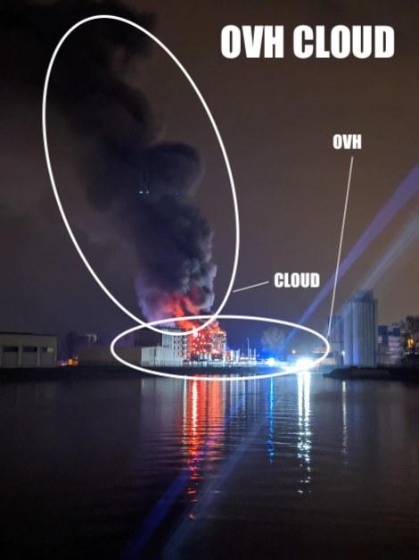
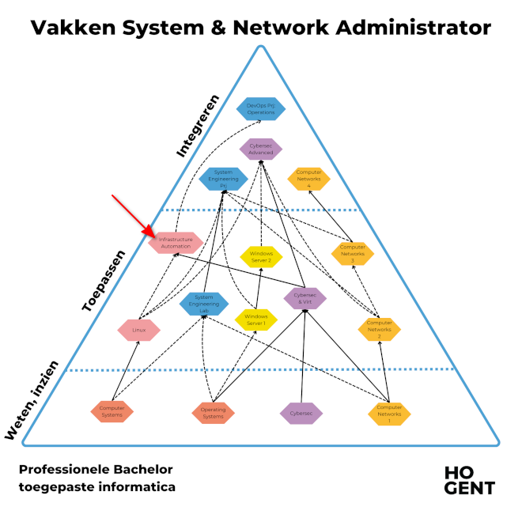

HOGENT toegepaste informatica
Bert Van Vreckem & Thomas Parmentier
2024-2025
Inuits on-call team merkt dat enkele VMs “weg” zijn.
We have a major incident on SBG2. The fire declared in the building. Firefighters were immediately on the scene but could not control the fire in SBG2. The whole site has been isolated which impacts all services in SGB1-4. We recommend to activate your Disaster Recovery Plan.
— Octave Klaba (@olesovhcom) March 10, 2021

Geen dataverlies!
Meeste problemen opgelost voor aanvang kantooruren
Gerelateerde termen:
Wat zijn de verschillende fasen in het leven van een server(-VM)?
Tools voor server lifecycle management:
Zie Chamilo-cursus voor gedetailleerde info!

PS> winget install Git.Git
PS> winget install Microsoft.VisualStudioCode
PS> winget install Oracle.Virtualbox --version 7.0.20
PS> winget install Hashicorp.Vagrant(Mac, Linux: zie studiegids op Chamilo)
intro, installatie software
M1. Continuous Integration/Delivery with Jenkins
(labos)
M2. Configuration management with Ansible
(labos)
(labos) Deadline M1.
(labos)
M3. Container Orchestration with Kubernetes
(labos)
(labos)
M4. Monitoring
(labos)
(labos) Deadline M3.
Optioneel: inhaalsessie
Wo 18 dec: Deadline Panopto-opnames (M2, M4)
Persoonlijke opdracht, geen begeleiding